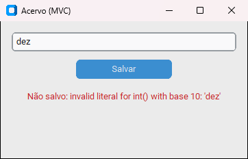

Técnico em Desenvolvimento de Sistemas · Plano de Curso 01/2025
MVC na prática: tirar as decisões da janela sem quebrar nada
A JanelaItens passou de quatrocentas linhas: monta widgets, guarda o item em edição, valida, decide o que dizer em cada recusa e ainda mostra tudo. Hoje o formulário é refatorado no padrão MVC: as decisões vão para um ControleFormulario que não conhece Tk, a janela vira a visão que só mostra, e o objeto de dados continua sendo o caminho para o modelo. Os cinquenta testes da janela, que já passam, são a rede de segurança: a refatoração está certa quando eles continuam verdes sem mudar uma linha. No fim, você descobre quatro coisas que uma refatoração herdada quebrou, rodando os mesmos testes.
A aula continua no projeto da A19. Só o formulário (Adicionar, Editar item, Salvar e Cancelar) muda de lugar; remover, buscar, importar e o resto ficam na janela por enquanto. Use dados fictícios.
Outra equipe começou essa mesma refatoração, num controle_herdado.py, e entregou dizendo que nada mudou para quem usa. Na semana seguinte, vieram quatro relatos.
O erro vermelho do campo quantidade continua aparecendo depois de um Adicionar que deu certo. Com o nome vazio e a quantidade errada, só aparece o erro da quantidade. Quando o banco recusa um Adicionar, o que a pessoa digitou some. E, depois de um Salvar recusado porque outra pessoa mudou o item, a janela continua em Editar item, e o Salvar seguinte grava por cima.
Em dupla, antes de abrir o código: se os testes da A11 à A19 tivessem sido rodados, quais desses relatos teriam aparecido antes de chegar a quem usa?
Entrega desta aula
No repositório do projeto: kits/controle.py; kits/janela.py com o formulário entregue ao controle; tests/test_controle.py; e docs/arquitetura.md com o desenho das camadas. Faça um commit revisado e envie pelo canal combinado com a turma junto com o registro exportado desta página. Critério: todos os testes da A19 passam sem nenhuma mudança neles, e os testes do controle rodam sem abrir janela.
O modelo é o que o programa sabe e guarda: ItemKit e as regras de quantidade (A04, A05), o repositório e o MySQL. A visão é o que a pessoa vê e toca: widgets, cores, foco. O controle fica entre os dois: recebe um pedido da visão (estes textos, este kit), pergunta ao modelo e diz à visão o que mostrar.
Na janela da A19, as três coisas estão na mesma classe. Funciona, mas cada mudança mexe em tudo, e testar uma regra do formulário exige abrir uma janela. Separar não muda o que a pessoa vê; muda onde cada decisão mora. O DadosMySQL, desde a A14, já é a porta do modelo; hoje o formulário ganha o controle.
A regra que garante a separação é simples: kits/controle.py não importa customtkinter nem tkinter. Tudo o que ele sabe da janela são os nomes dos métodos da visão.
O controle recebe a visão no __init__, como a janela recebe o objeto de dados desde a A14, e chama métodos dela: mostrar_erros, modo_edicao, modo_novo, avisar, item_adicionado e mostrar_lista. Nenhum desses métodos decide nada: mostrar_erros marca os campos que o controle mandou, avisar pinta de verde ou vermelho o texto que o controle escreveu.
A janela é a visão de verdade: ela cria o controle passando a si mesma, ControleFormulario(dados, self), e os botões chamam métodos curtos que só entregam o pedido. Nos testes do controle, a visão é de mentira: um objeto que anota cada pedido numa lista. O teste confere a conversa inteira, na ordem, sem nenhuma janela, em milissegundos.
Alguns detalhes que os testes da janela já cobravam viram detalhes da conversa: mostrar_erros é chamado sempre, mesmo sem erro, para apagar os erros antigos; item_adicionado só depois que o banco aceitou; e o Salvar volta ao modo novo com sucesso ou recusa.
Uma refatoração muda o código sem mudar o comportamento. Quem diz qual é o comportamento são os testes que já passam: os cinquenta da janela, os do banco e os de fluxo. Por isso eles não mudam nesta aula. Se um deles falhar depois da refatoração, o defeito é da refatoração, e não do teste.
Rode tudo antes de começar, para saber que o ponto de partida está verde. Mova uma parte, rode, mova a próxima. Quando algo falhar, você sabe que foi o último passo. É o que a equipe do código herdado não fez: os quatro relatos estavam cobertos por testes que ninguém rodou.
O tutorial separa um acervo pequeno em modelo e controle, num arquivo acervo_mvc.py, e liga o mesmo controle a três visões: uma que escreve no terminal, uma de mentira nos testes e uma janela. O controle não muda nenhuma vez.
As telas e a captura são de execuções reais desse código, no Windows 11 com Python 3.14 e CustomTkinter 6.0.0; o tempo do Ran foi fixado.
Passo 1 · acervo_mvc.py: o modelo e o controle
class Acervo:
"""O modelo: guarda os livros e não deixa um número inválido entrar."""
def __init__(self):
self._livros = {1: ['Guia de Redes', 2], 2: ['Atlas', 1]}
def livros(self):
return [(livro_id, titulo, quantos) for livro_id, (titulo, quantos) in self._livros.items()]
def mudar(self, livro_id, exemplares):
if exemplares < 0:
raise ValueError('exemplares não pode ser negativo')
self._livros[livro_id][1] = exemplares
class ControleAcervo:
"""O controle: recebe o pedido como texto, pede ao modelo e diz à visão o que mostrar. Não sabe de janela."""
def __init__(self, acervo, visao):
self._acervo = acervo
self._visao = visao
def salvar(self, livro_id, texto):
try:
self._acervo.mudar(livro_id, int(texto))
except ValueError as erro:
self._visao.erro(f'Não salvo: {erro}')
return
self._visao.mostrar(self._acervo.livros())
Passo 2 · texto.py: uma visão de texto
from acervo_mvc import Acervo, ControleAcervo
class VisaoTexto:
"""Uma visão que escreve no terminal: o controle não percebe a diferença."""
def mostrar(self, livros):
for livro_id, titulo, quantos in livros:
print(f' {livro_id} {titulo}: {quantos}')
def erro(self, mensagem):
print(f' ! {mensagem}')
controle = ControleAcervo(Acervo(), VisaoTexto())
for pedido in ('3', 'dez', '-1'):
print(f'salvar Atlas com {pedido!r}:')
controle.salvar(2, pedido)
Passo 2 · O controle falando com o terminal
Rode com .\.venv\Scripts\python.exe texto.py.
PS C:\projetos\kits> .\.venv\Scripts\python.exe texto.py
salvar Atlas com '3':
1 Guia de Redes: 2
2 Atlas: 3
salvar Atlas com 'dez':
! Não salvo: invalid literal for int() with base 10: 'dez'
salvar Atlas com '-1':
! Não salvo: exemplares não pode ser negativo
Repare: O texto dez foi recusado pelo controle, e o -1, pelo modelo; nos dois casos, quem escolheu as palavras foi o controle, e quem mostrou foi a visão.
Passo 3 · test_acervo_mvc.py: uma visão que anota
import unittest
from acervo_mvc import Acervo, ControleAcervo
class VisaoQueAnota:
def __init__(self):
self.pedidos = []
def mostrar(self, livros):
self.pedidos.append(('mostrar', livros))
def erro(self, mensagem):
self.pedidos.append(('erro', mensagem))
class TestControleAcervo(unittest.TestCase):
def setUp(self):
self.visao = VisaoQueAnota()
self.controle = ControleAcervo(Acervo(), self.visao)
def test_numero_valido_muda_e_mostra(self):
self.controle.salvar(2, '3')
self.assertEqual(self.visao.pedidos, [('mostrar', [(1, 'Guia de Redes', 2), (2, 'Atlas', 3)])])
def test_texto_que_nao_e_numero_vira_erro(self):
self.controle.salvar(2, 'dez')
self.assertEqual(self.visao.pedidos[0][0], 'erro')
def test_negativo_e_recusado_pelo_modelo(self):
self.controle.salvar(2, '-1')
self.assertEqual(self.visao.pedidos, [('erro', 'Não salvo: exemplares não pode ser negativo')])
Passo 3 · O controle testado sem janela
Rode com .\.venv\Scripts\python.exe -m unittest -v test_acervo_mvc.
PS C:\projetos\kits> .\.venv\Scripts\python.exe -m unittest -v test_acervo_mvc
test_negativo_e_recusado_pelo_modelo (test_acervo_mvc.TestControleAcervo.test_negativo_e_recusado_pelo_modelo) ... ok
test_numero_valido_muda_e_mostra (test_acervo_mvc.TestControleAcervo.test_numero_valido_muda_e_mostra) ... ok
test_texto_que_nao_e_numero_vira_erro (test_acervo_mvc.TestControleAcervo.test_texto_que_nao_e_numero_vira_erro) ... ok
----------------------------------------------------------------------
Ran 3 tests in 0.000s
OK
Passo 4 · janela_mvc.py: uma visão com janela
import customtkinter as ctk
from acervo_mvc import Acervo, ControleAcervo
class VisaoJanela:
"""A mesma conversa com o controle, agora numa janela: mostrar e erro mudam o rótulo."""
def __init__(self, rotulo):
self._rotulo = rotulo
def mostrar(self, livros):
self._rotulo.configure(text='\n'.join(f'{titulo}: {quantos}' for _, titulo, quantos in livros), text_color='gray10')
def erro(self, mensagem):
self._rotulo.configure(text=mensagem, text_color='#c62828')
ctk.set_appearance_mode('light')
janela = ctk.CTk()
janela.title('Acervo (MVC)')
janela.geometry('360x200')
exemplares = ctk.CTkEntry(janela, placeholder_text='Exemplares do Atlas')
exemplares.pack(padx=16, pady=(16, 6), fill='x')
resposta = ctk.CTkLabel(janela, text='', justify='left')
controle = ControleAcervo(Acervo(), VisaoJanela(resposta))
salvar = ctk.CTkButton(janela, text='Salvar', command=lambda: controle.salvar(2, exemplares.get()))
salvar.pack(padx=16, pady=6)
resposta.pack(padx=16, pady=6)
janela.mainloop()
Passo 4 · O mesmo controle numa janela
Rode, digite dez e clique em Salvar.

Repare: A mensagem é a do int(), que o controle repassou sem traduzir: no projeto, a validação do domínio escreve mensagens melhores. Trocar a visão não mudou nada no controle.
Continue no repositório do projeto, na raiz, com o .venv. Antes de tudo, rode todos os testes e confirme que passam. Uma pessoa opera e a outra confere; troquem os papéis depois do intervalo.
A ordem importa: o controle com os testes dele, a janela ligada ao controle, todos os testes de novo, a refatoração herdada e o desenho. Não mude nenhum teste da A19 para fazê-lo passar. Se consultar IA, registre a ajuda recebida e confirme cada sugestão rodando os testes.
kits/controle.py: o ControleFormulario
Crie kits/controle.py a partir do arquivo, completando validar e o ControleFormulario pelos comentários. Traga o validar da sua janela para cá. Nenhum import de customtkinter ou tkinter. Entrega: kits/controle.py.
Concluído quando: Os oito testes de tests/test_controle.py passam, inclusive os três que você vai completar.
Dica para realizar a atividade
Volte à tabela da seção de camadas. Que linha do seu confirmar antigo vira cada pedido à visão?
"""Controle do formulário de itens (A20): decide o que Adicionar, Salvar, Editar item e Cancelar fazem.
Salve como kits/controle.py. Não importe customtkinter nem tkinter aqui.
"""
from kits.modelo import ItemKit
from kits.regras import QuantidadeInvalida, ler_quantidade
# Recusas que a visão sabe explicar. Qualquer outro erro é defeito e sobe.
RECUSAS = (LookupError, ValueError, ConnectionError)
def validar(nome, quantidade):
"""(ItemKit, {}) se os textos servem; (None, erros) se não, com as mensagens do domínio por campo.
Traga para cá o validar da sua janela: os dois erros aparecem juntos, como na A12."""
...
class ControleFormulario:
"""dados tem adicionar(kit_id, item) e editar(item_id, antes, depois).
visao tem mostrar_erros(erros), modo_edicao(nome, quantidade), modo_novo(), avisar(texto, deu_certo),
item_adicionado() (limpa o formulário e mostra a lista com o item novo) e mostrar_lista().
"""
def __init__(self, dados, visao):
...
@property
def editando(self):
"""True enquanto o formulário edita um item."""
...
def editar(self, item_id, nome, quantidade):
"""Guarda (item_id, ItemKit como foi lido) e pede à visão o modo de edição."""
...
def cancelar(self):
"""Sem edição, não faz nada. Com edição, esquece o item e pede o modo novo."""
...
def confirmar(self, kit_id, nome, quantidade):
"""Nesta ordem: avisar('', True); validar e mostrar_erros (sempre, até vazio, para apagar erros antigos);
sem item, para. Em edição, _salvar. Senão, adicionar; recusa: avisar('Não adicionado: ...', False) e os
campos ficam; sucesso: item_adicionado() e avisar('Adicionado: Alicate (4).', True)."""
...
def _salvar(self, depois):
"""editar(item_id, antes, depois). Com sucesso ou recusa, volta ao modo novo (cancelar), avisa
('Salvo: ...' ou 'Não salvo: ...') e pede mostrar_lista()."""
...
Testes: .\.venv\Scripts\python.exe -m unittest -v tests.test_controle, na raiz do projeto. Não abrem janela nem usam banco.
tests/test_controle.py: o controle sem janela
Salve em tests/test_controle.py. A VisaoDeMentira anota cada pedido como uma tupla com o nome do método e os argumentos; o BancoDeMentira é o da janela. Ele já tem cinco testes. Escreva os três marcados com Complete. Entrega: tests/test_controle.py.
Concluído quando: Os oito testes passam com o seu código e rodam sem abrir nenhuma janela. Depois mova o item_adicionado para antes do try do adicionar: o seu teste da recusa precisa falhar. Desfaça a troca.
Dica para realizar a atividade
self.visao.pedidos[-1] é o último pedido; self.visao.pedidos[-3:], os três últimos.
"""O ControleFormulario sem janela: uma visão de mentira anota o que o controle mandou mostrar."""
import unittest
from kits.controle import ControleFormulario, validar
from tests.test_janela import FORA, BancoDeMentira
class VisaoDeMentira:
"""Anota cada pedido do controle, na ordem, como (nome do método, argumentos)."""
def __init__(self):
self.pedidos = []
def __getattr__(self, nome):
if nome not in ('mostrar_erros', 'modo_edicao', 'modo_novo', 'avisar', 'item_adicionado', 'mostrar_lista'):
raise AttributeError(nome)
return lambda *args: self.pedidos.append((nome, *args))
class TestControle(unittest.TestCase):
def setUp(self):
self.banco = BancoDeMentira()
self.visao = VisaoDeMentira()
self.controle = ControleFormulario(self.banco, self.visao)
def test_validar_devolve_o_item_ou_as_mensagens_do_dominio(self):
self.assertEqual((repr(validar(' Alicate ', '4')[0]), validar(' Alicate ', '4')[1]), ("ItemKit('Alicate', 4)", {}))
self.assertEqual(validar('', 'dez'), (None, {'nome': 'nome deve ser texto não vazio',
'quantidade': "'dez' não é um número inteiro"}))
def test_adicionar_valido_grava_limpa_e_avisa(self):
self.controle.confirmar(1, 'Alicate', '4')
self.assertEqual(self.banco.entregues, [(1, 'Alicate', 4)])
self.assertEqual(self.visao.pedidos, [('avisar', '', True), ('mostrar_erros', {}), ('item_adicionado',),
('avisar', 'Adicionado: Alicate (4).', True)])
def test_invalido_mostra_os_erros_e_nao_grava(self):
self.controle.confirmar(1, 'Alicate', '0')
self.assertEqual(self.banco.entregues, [])
self.assertEqual(self.visao.pedidos[1:], [('mostrar_erros', {'quantidade': '0 não é maior que zero'})])
# Complete: com FORA em falhas['adicionar'], o último pedido à visão é avisar('Não adicionado: ...', False) e
# item_adicionado não é pedido.
def test_defeito_de_quem_grava_sobe(self):
self.banco.falhas['adicionar'] = AttributeError('nme')
with self.assertRaises(AttributeError):
self.controle.confirmar(1, 'Alicate', '4')
def test_editar_e_salvar_manda_o_antes_e_o_depois(self):
self.controle.editar(2, 'Notebook', 2)
self.assertTrue(self.controle.editando)
self.controle.confirmar(1, 'Notebook i5', '3')
self.assertEqual(self.banco.editados, [(2, 'Notebook i5', 3)])
self.assertFalse(self.controle.editando)
self.assertEqual(self.visao.pedidos, [('modo_edicao', 'Notebook', 2), ('avisar', '', True), ('mostrar_erros', {}),
('modo_novo',), ('avisar', 'Salvo: Notebook i5 (3).', True), ('mostrar_lista',)])
# Complete: editando o Notebook com 2, outra pessoa muda para 5 no banco de mentira; confirmar com 1 termina com
# modo_novo, avisar('Não salvo: ...', False) e mostrar_lista, nessa ordem.
# Complete: cancelar sem edição não pede nada à visão.
Testes: .\.venv\Scripts\python.exe -m unittest -v tests.test_controle, na raiz do projeto. Não abrem janela nem usam banco.
kits/janela.py: a janela vira a visão do formulário
Faça na sua JanelaItens da A19 as mudanças descritas no arquivo: o controle no lugar de self._editando, os três métodos que entregam pedidos e os seis métodos da visão. Não mude nenhum arquivo de teste. Entrega: kits/janela.py.
Concluído quando: Todos os testes da A19 passam sem mudança, inclusive os cinquenta de tests/test_janela.py, e kits/controle.py não importa nada de tkinter nem de customtkinter.
Dica para realizar a atividade
Se um teste da janela falhar, compare a ordem dos pedidos no seu controle com a ordem das linhas do confirmar antigo.
# Mudanças na sua kits/janela.py da A19. O resto da JanelaItens continua igual.
# Saem daqui: validar, _salvar, self._editando e os imports de ItemKit, QuantidadeInvalida e ler_quantidade.
from kits.controle import ControleFormulario
class JanelaItens(ctk.CTk):
def __init__(self, dados, perguntar, intervalo_ms=10_000, pedir_nome=None, escolher_arquivo=None):
# No lugar de self._editando: self._controle = ControleFormulario(dados, self). A janela é a visão.
...
def sincronizar(self):
# Durante uma edição não mexe em nada: pergunte ao controle (self._controle.editando).
...
# O formulário: a janela recebe o pedido e entrega ao controle
def editar_selecionado(self):
"""Com uma linha escolhida, self._controle.editar(item_id, nome, quantidade)."""
...
def cancelar_edicao(self):
...
def confirmar(self):
"""self._controle.confirmar(kit atual, texto do nome, texto da quantidade)."""
...
# A visão do formulário: só mostra o que o controle mandar
def mostrar_erros(self, erros):
"""Marca ou desmarca os dois campos; com erro, o foco vai para o primeiro campo errado (nome antes)."""
...
def modo_edicao(self, nome, quantidade):
"""Campos com o item, título Editar item, botão Salvar, Cancelar visível, aviso vazio."""
...
def modo_novo(self):
"""Campos vazios e sem erro, título Novo item, botão Adicionar, Cancelar escondido."""
...
def avisar(self, texto, deu_certo):
"""Verde se deu certo; vermelho se não."""
...
def item_adicionado(self):
"""Limpa os campos e a busca, foco no nome, e mostra a lista."""
...
def mostrar_lista(self):
...
Na raiz do projeto. Testes: .\.venv\Scripts\python.exe -m unittest -v, na raiz do projeto. Os testes da janela usam um banco de mentira e abrem janelas de verdade por alguns instantes; não mexa no mouse nem no teclado enquanto rodam.
controle_herdado.py: o que a refatoração quebrou
Siga a instrução do começo do arquivo abaixo: o herdado entra por um momento no lugar do seu kits/controle.py, e você roda os testes da janela e do controle. Para cada relato da partida, registre o teste que falhou, a linha do controle herdado que causa a falha e a correção. Desfaça a troca. Entrega: a tabela no registro desta página. O controle_herdado.py não vai para o commit.
Concluído quando: Os quatro relatos têm teste que falha, linha culpada e correção, e a dupla diz qual relato só o teste do controle pegaria.
Dica para realizar a atividade
No relato 2, o que o ItemKit(nome, ler_quantidade(quantidade)) faz primeiro?
"""Refatoração herdada do formulário, feita por outra equipe sem rodar os testes.
Para examinar: guarde o seu kits/controle.py (copie para controle_bom.py, fora da pasta kits), ponha este
arquivo no lugar dele, rode os testes da janela e do controle e devolva o seu.
"""
from kits.modelo import ItemKit
from kits.regras import QuantidadeInvalida, ler_quantidade
RECUSAS = (LookupError, ValueError, ConnectionError)
def validar(nome, quantidade):
try:
return ItemKit(nome, ler_quantidade(quantidade)), {}
except QuantidadeInvalida as erro:
return None, {'quantidade': str(erro)}
except ValueError as erro:
return None, {'nome': str(erro)}
class ControleFormulario:
def __init__(self, dados, visao):
self._dados = dados
self._visao = visao
self._editando = None
@property
def editando(self):
return self._editando is not None
def editar(self, item_id, nome, quantidade):
self._editando = (item_id, ItemKit(nome, quantidade))
self._visao.modo_edicao(nome, quantidade)
def cancelar(self):
if self._editando is None:
return
self._editando = None
self._visao.modo_novo()
def confirmar(self, kit_id, nome, quantidade):
self._visao.avisar('', True)
item, erros = validar(nome, quantidade)
if erros:
self._visao.mostrar_erros(erros)
return
if self._editando is not None:
self._salvar(item)
return
self._visao.item_adicionado()
try:
self._dados.adicionar(kit_id, item)
except RECUSAS as erro:
self._visao.avisar(f'Não adicionado: {erro}', False)
return
self._visao.avisar(f'Adicionado: {item.nome} ({item.quantidade}).', True)
def _salvar(self, depois):
item_id, antes = self._editando
try:
self._dados.editar(item_id, antes, depois)
except RECUSAS as erro:
self._visao.avisar(f'Não salvo: {erro}', False)
return
self.cancelar()
self._visao.avisar(f'Salvo: {depois.nome} ({depois.quantidade}).', True)
self._visao.mostrar_lista()
Na raiz do projeto, com o herdado no lugar do kits/controle.py: .\.venv\Scripts\python.exe -m unittest -v tests.test_janela tests.test_controle. Depois, devolva o seu.
docs/arquitetura.md: as camadas do aplicativo
Crie docs/arquitetura.md com o desenho das camadas: os arquivos de cada uma, quem chama quem (setas), o que cada uma não pode importar e o que ainda está misturado na janela. Pode ser um desenho em texto, como o do modelo abaixo. Entrega: docs/arquitetura.md.
Concluído quando: Outra dupla, só com o documento, diz em que arquivo mudaria a mensagem Adicionado e em que arquivo mudaria a cor do aviso.
Dica para realizar a atividade
Diga também o que a A21 vai separar: o que ainda está misturado?
# Arquitetura
```
janela.py (visão) ──pedidos──▶ controle.py (controle) ──▶ dados (DadosMySQL) ──▶ repositorio.py ──▶ MySQL
▲ │
└──────── o que mostrar ───────┘
```
## Camadas e arquivos
## O que cada camada não pode importar
## O que ainda está misturado
Arquivo docs/arquitetura.md do projeto. A prova é a pergunta do critério para outra dupla.
Bônus: o Remover item no controle
Leve também o Remover item para o controle: a pergunta, a recusa e o aviso. A pergunta é decisão ou visão? Justifique. Entrega (opcional): o código, os testes do controle e o texto no registro desta página.
Concluído quando: Os testes da janela continuam passando sem mudança, e há testes do controle para Sim, Não e recusa.
Dica para realizar a atividade
perguntar já é uma função recebida de fora desde a A13. Quem deveria recebê-la agora?
# Remover item no controle
## A pergunta: decisão ou visão?
## Código
## Testes
No projeto, rodando .\.venv\Scripts\python.exe -m unittest -v.
Responda às perguntas, classifique as situações e julgue os achados da revisão. Sempre que puder, confira rodando os testes antes de decidir. A correção é feita com o professor depois da tentativa.
Outra dupla entregou o confirmar abaixo, e uma ferramenta de revisão listou três achados. Julgue cada um: é problema real ou não?
Entregue, no repositório do projeto: kits/controle.py; kits/janela.py com o formulário entregue ao controle; tests/test_controle.py; e docs/arquitetura.md. Os arquivos do tutorial e o controle_herdado.py ficam fora do commit.
No registro desta página, cole a saída de todos os testes antes e depois da refatoração, a tabela dos quatro relatos da refatoração herdada e o desenho das camadas. Se fez o bônus, cole o código e os testes.
Faça um commit revisado, como na A04: confira com git diff --cached que nenhum arquivo de teste da A19 mudou e que banco.ini não entrou.